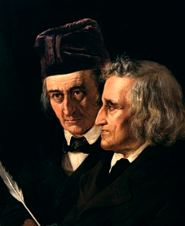

El niño y el diablo
Personajes principales:
- el diablo
- el niño
Erase una vez un niño que le interesaba ir a la luna pero decía que sus pies eran muy pequeños, quería que alguien le ayudara a llegar. El diablo lo escuchó y se presenció frente a el y le ofreció su ayuda.
A cambio le tenía que dar su alma, el niño sin importar porque no entendía que era se la dió firmando un contrato con su nombre, el diablo le otorgo sabiduría y el niño creció y sacando el mejor icfes se ganó una beca para estudiar ingeniería física en el MIT, empezó obteniendo buenas notas y llendo a casa de noche, observó la luna y se dió cuenta que podía traspasar el tiempo a mucha velocidad, descubriendo la relatividad armoniosa y despues patentandola.
Agradeciendo el regalo del diablo, el joven se volvió anciano, encontrandose luego con el diablo, pasando luego por los doce niveles del apocalipsis, se encontraba en el umbral del apocalipsis, un apocalipsis que no llegaría de forma violenta ni ruidosa, sino a través de doce niveles. Cada uno de ellos, una prueba que pondría a prueba su alma y su ser. El viaje era inevitable, y él ya había sido elegido para cruzarlo. .
Biografía
cuento escrito por los Hermanos grimm y modificado por luisa y kelly Los hermanos Grimm (die Brüder Grimm o die Gebrüder Grimm), Jacob Grimm (Hanau, Hesse; 4 de enero de 1785-Berlín, 20 de septiembre de 1863) y Wilhelm Grimm (ibídem; 24 de febrero de 1786-Berlín, 16 de diciembre de 1859), fueron eruditos, filólogos, mitólogos, investigadores culturales, lexicógrafos y escritores alemanes que coleccionaron y publicaron juntos folclore y libros durante el siglo XIX. Están entre los primeros y más conocidos coleccionistas de cuentos porque popularizaron relatos orales tradicionales como La Cenicienta (Aschenputtel), El príncipe rana (Der Froschkönig), La pastora de ocas (Die Gänsemagd), Hansel y Gretel (Hänsel und Gretel), Rapunzel (Rapunzel), Rumpelstiltskin (Rumpelstilzchen), La bella durmiente (Dornröschen) y Blancanieves (Schneewittchen). Su colección clásica de cuentos de hadas, Cuentos de la infancia y del hogar (Kinder- und Hausmärchen), se publicó por primera vez en dos volúmenes en 1812 y 1815.